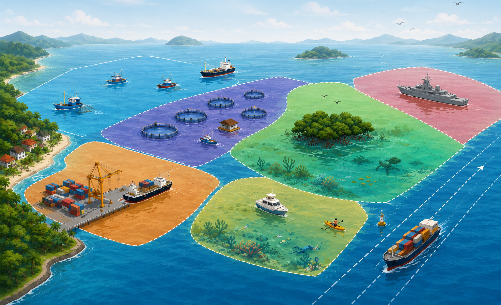
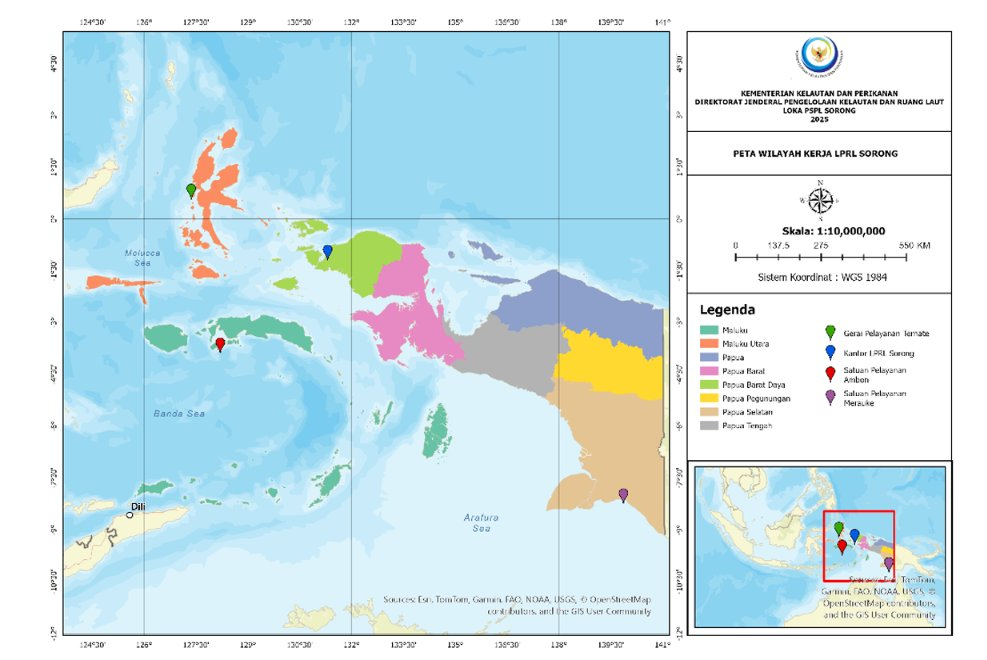

Meliputi wilayah kerja Provinsi Maluku dan Maluku Utara.
LOKA PENATAAN RUANG LAUT SORONG
Menata Ruang Laut untuk Masa Depan yang Berkelanjutan.
Loka Penataan Ruang Laut Sorong merupakan Unit Pelaksana Teknis di bidang penataan ruang laut yang melaksanakan fasilitasi dan dukungan perencanaan, pemanfaatan, pengendalian, serta pembinaan penataan ruang laut.

TENTANG INSTANSI
Profil LPRL Sorong
Mengenal Loka Penataan Ruang Laut Sorong.
Berdasarkan Peraturan Menteri Kelautan dan Perikanan Nomor 29/PERMEN-KP/2025 tentang Organisasi dan Tata Kerja Unit Pelaksana Teknis Bidang Penataan Ruang Laut, Unit Pelaksana Teknis Penataan Ruang Laut berada di bawah dan bertanggung jawab kepada Direktur Jenderal Penataan Ruang Laut.
Unit Pelaksana Teknis Penataan Ruang Laut dipimpin oleh Kepala UPT PRL dan terdiri atas dua klasifikasi, yaitu Loka Penataan Ruang Laut (LPRL) dan Balai Penataan Ruang Laut (BPRL). Klasifikasi tersebut didasarkan pada analisis beban kerja.
LPRL Sorong merupakan salah satu Unit Pelaksana Teknis yang mempunyai tugas melaksanakan fasilitasi dan dukungan penyusunan serta peninjauan kembali perencanaan tata ruang, zonasi, dan kawasan, pelaksanaan pemanfaatan ruang laut, pengendalian pemanfaatan ruang laut, serta pembinaan penataan ruang laut sesuai ketentuan peraturan perundang-undangan.
MANDAT ORGANISASI
Tugas dan Fungsi
Dalam melaksanakan tugasnya, UPT Penataan Ruang Laut menyelenggarakan fungsi sebagaimana diatur dalam Pasal 5 Permen KP Nomor 29/PERMEN-KP/2025.
-
Penyusunan Rencana, Program, dan Anggaran
Penyusunan rencana, program, dan anggaran di bidang fasilitasi serta dukungan penyelenggaraan penataan ruang laut.
-
Pengelolaan Data Tematik Spasial dan Nonspasial
Dukungan pengumpulan, verifikasi, pengolahan, dan pemodelan data tematik spasial dan nonspasial untuk penyusunan materi teknis muatan ruang laut.
-
Perancangan Arahan Pemanfaatan Ruang Pesisir dan Pulau-Pulau Kecil
Dukungan pengumpulan, verifikasi, pengolahan, pemodelan, analisis data, dan perancangan indikasi arahan pemanfaatan ruang perairan pesisir dan pulau-pulau kecil.
-
Perencanaan Ruang Perairan Darat, Kolom Perairan, Dasar Laut, dan Konservasi
Dukungan pengumpulan, verifikasi, pengolahan, pemodelan, analisis data, dan perancangan penyusunan rencana ruang perairan darat, perencanaan rinci pemanfaatan ruang kolom perairan dan dasar laut, serta alokasi ruang kawasan konservasi pesisir dan pulau-pulau kecil.
-
Peninjauan Kembali Rencana Tata Ruang Laut Nasional dan Materi Teknis
Dukungan peninjauan kembali rencana tata ruang laut nasional dan materi teknis perairan pesisir dan pulau-pulau kecil.
-
Pendampingan dan Verifikasi Kesesuaian Kegiatan Pemanfaatan Ruang Laut
Dukungan pendampingan, verifikasi dokumen, penilaian teknis, dan verifikasi lapangan kesesuaian kegiatan pemanfaatan ruang laut.
-
Pencatatan, Pengadministrasian, dan Pemetaan Data KKPRL
Fasilitasi pencatatan, pengadministrasian, dan pemetaan data kesesuaian kegiatan pemanfaatan ruang laut.
-
Penilaian Pelaksanaan KKPRL, Laporan Tahunan, dan Perwujudan Rencana
Fasilitasi pengumpulan data penilaian pelaksanaan kesesuaian kegiatan pemanfaatan ruang laut, laporan tahunan, dan perwujudan rencana tata ruang serta rencana zonasi.
-
Identifikasi Pengendalian Pemanfaatan Ruang Laut
Dukungan identifikasi pengendalian pemanfaatan ruang laut.
-
Penyelesaian Sengketa Pemanfaatan Ruang Laut
Dukungan penyelesaian sengketa pemanfaatan ruang laut.
-
Pendampingan Teknis Masyarakat serta Identifikasi Sarana dan Prasarana
Fasilitasi pendampingan teknis masyarakat dan kelompok masyarakat serta identifikasi kebutuhan prasarana dan sarana untuk efektivitas penyelenggaraan penataan ruang laut.
-
Pemantauan, Evaluasi, dan Pelaporan Penataan Ruang Laut
Pelaksanaan pemantauan, evaluasi, dan pelaporan di bidang penyelenggaraan penataan ruang laut.
-
Pelaksanaan Urusan Ketatausahaan
Pelaksanaan urusan ketatausahaan.
STRUKTUR PELAYANAN KEAHLIAN
Kelompok Jabatan Fungsional
Kelompok Jabatan Fungsional mempunyai tugas memberikan pelayanan fungsional dalam pelaksanaan tugas dan fungsi UPT PRL sesuai dengan bidang keahlian dan keterampilan.
Kelompok Jabatan Fungsional terdiri atas berbagai jenis jabatan fungsional sesuai dengan bidang keahlian dan keterampilan. Jumlahnya ditentukan berdasarkan kebutuhan yang didasari atas analisis jabatan dan analisis beban kerja.
JANGKAUAN PELAYANAN
Satuan Pelayanan dan Wilayah Kerja
Pada Unit Pelaksana Teknis Penataan Ruang Laut dibentuk satuan pelayanan sesuai kebutuhan berdasarkan analisis beban kerja. Satuan pelayanan merupakan unit organisasi nonstruktural yang dipimpin oleh koordinator satuan kerja yang ditetapkan oleh Kepala UPT PRL.
Meliputi wilayah kerja Provinsi Papua Selatan.
Meliputi wilayah kerja Provinsi Papua, Papua Pegunungan, Papua Tengah, Papua Barat, dan Papua Barat Daya.
| UPT | Lokasi | Satuan Pelayanan | Wilayah Kerja |
|---|---|---|---|
| Loka Penataan Ruang Laut | Sorong, Papua Barat Daya | Ambon | Provinsi Maluku dan Maluku Utara |
| Loka Penataan Ruang Laut | Sorong, Papua Barat Daya | Merauke | Provinsi Papua Selatan |
| Loka Penataan Ruang Laut | Sorong, Papua Barat Daya | Sorong | Provinsi Papua, Papua Pegunungan, Papua Tengah, Papua Barat, dan Papua Barat Daya |

PELAYANAN PUBLIK
Layanan LPRL Sorong
LPRL Sorong menyediakan layanan konsultasi dan pendampingan teknis terkait penataan ruang laut untuk mendukung masyarakat dan pemangku kepentingan.
Konsultasi Perizinan KKPRL
Diskusi mendalam untuk membahas berbagai informasi seputar perizinan Kesesuaian Kegiatan Pemanfaatan Ruang Laut (KKPRL).
Asistensi Perizinan KKPRL
Pendampingan teknis terkait proses pengurusan perizinan KKPRL.
Konsultasi Laporan Tahunan
Layanan konsultasi dalam penyusunan Laporan Tahunan KKPRL.